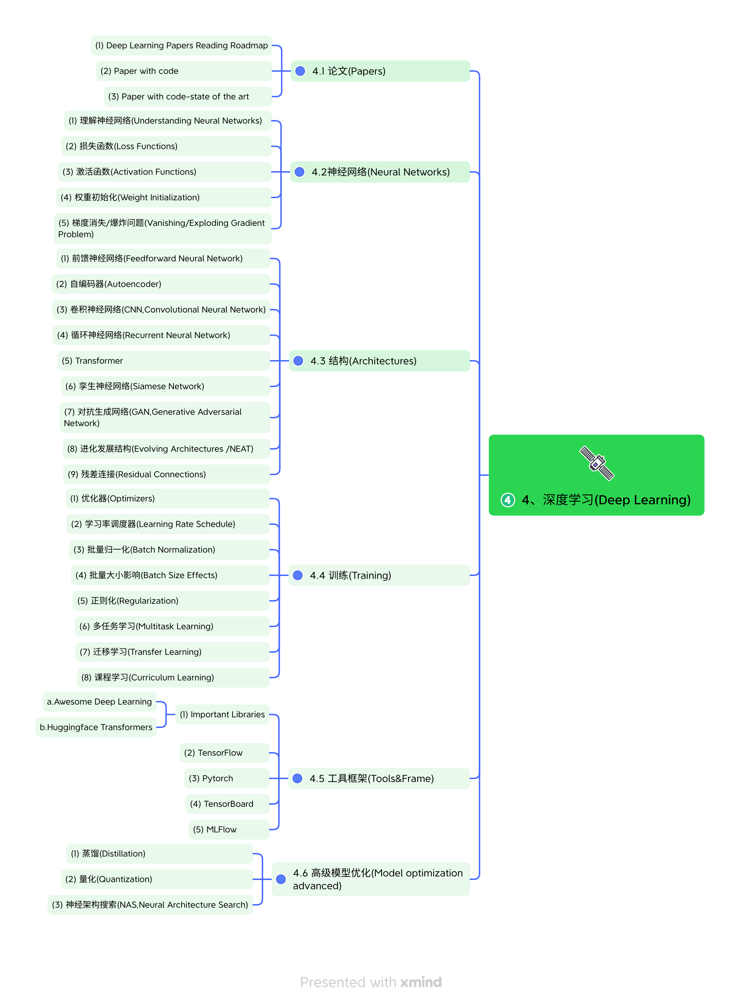

Awesome-Road-Map
Contents
Awesome-Road-Map#
项目介绍#
计算机科学路线图。

PDF file：pdf
|
|
|
|---|---|---|
 |
|
|


#
项目简介#
目录
- Awesome-Road-Map
- 1.Fundamentals
- 1、基础知识(Fundamentals)
- 2.Data Science
- 2、数据科学(Data Science)
- 3.Machine Learning
- 3、机器学习(Machine Learning)
- 4.Deep Learning
- 4、深度学习(Deep Learning)
- 5.Data Learning
- 5、数据工程(Data Engineering)
- 5.1 数据格式总结(Summary of Data Formats)
- 5.2 数据发现(Data Discovery)
- 5.3 数据来源&采集(Data Source & Acquisition)
- 5.4 数据集成(Data Integration)
- 5.5 数据融合(Data Fusion)
- 5.6 数据转换与数据增强(Transformation & Enrichment)
- 5.7 数据调查(Data Survey)
- 5.8 数据整理(OpenRefine)
- 5.9 数据量化(How much Data)
- 5.10 实施有效的提取、转换、加载流程(using ETL，Extract, Transform and Load)
- 5.11 数据湖与数据仓库(Data Lake vs Data Warehouse)
- 5.12 将您的 Python 应用程序 Docker 化(Dockerize your Python Application)
- 6.Big Data
- 6、大数据(BIg data)
- LearnList
 Kaggle
Kaggle HUAWEI-Mindspore
HUAWEI-Mindspore Baidu-Bit
Baidu-Bit